あれを「モーダル」と呼ぶな
──「モーダル」は名詞じゃない、形容詞だ
UI開発に関わるエンジニア、デザイナーのための用語整理 · 松本幸太郎
01これ、なんて呼んでいますか？
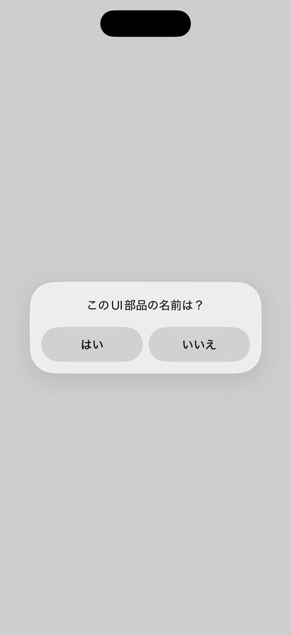
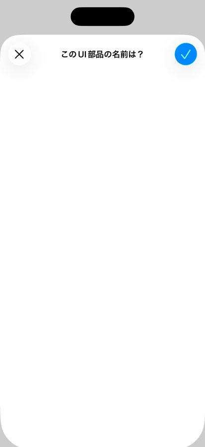
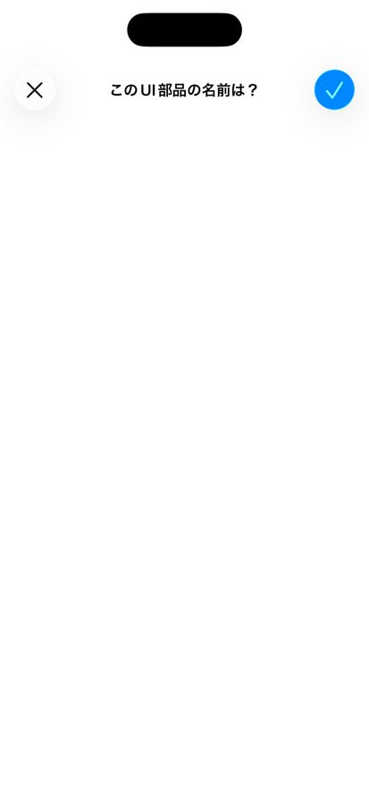
Android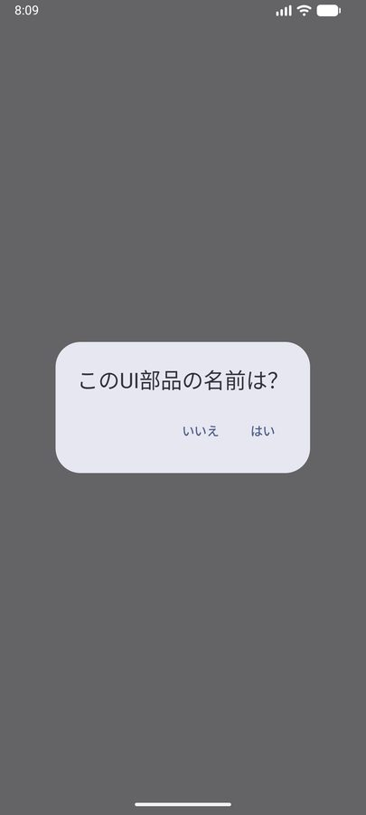
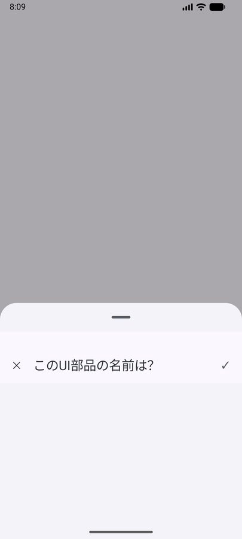
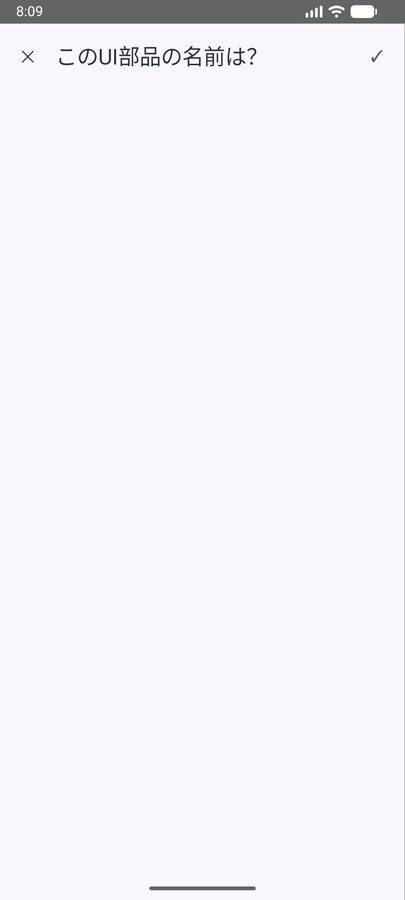
これ、なんて呼んでいますか？
01これ、なんて呼んでいますか？
02問題はどこにある？
「モーダル」はUI部品ではない
こう並べていないか：
「モーダル」という名前の部品は存在しない。
ミスコミュニケーションの発生原因
形容詞を名詞的に
誤用するな。
03形容詞を名詞的に誤用するな
ネコ
かわいい
イヌ
かわいい
03形容詞を名詞的に誤用するな
でも、どちらも「カワイイ」とは呼ばない。
「かわいい猫」「かわいい犬」と、
名詞を修飾して言う。
「モーダル」も同じ。だから、あれを「モーダル」と呼ぶな。
04結論：モーダルな〇〇といえ。
「モーダル（modal）」は形容詞。
意味は「モード的な」。
○ 「モーダルなダイアログ」「モーダルなシート」と修飾せよ
名詞になるのは “部品” の側：
ダイアログ ／ シート ／ 全画面ビュー …
モードとは
05モードとは
みんなが想像する、あの「◯◯モード」。
普段から、自然に使っている：
特別な概念じゃない。要は「ある状態に入る」こと。
モーダルとは
06モーダルとは
モード遷移を「操作ブロッキング付き」で
表現する特性。
① モード遷移する
あるモードから別のモードへ移る
② 親ビューをブロック
元の画面の操作を受け付けない
※「明示的に閉じる（dismiss）」は Apple が挙げる“特徴”。定義の本質は上の2点。
07具体例①：別のモードに入り、親ビューをブロック（連絡先アプリ）
編集モード → モーダルなシート
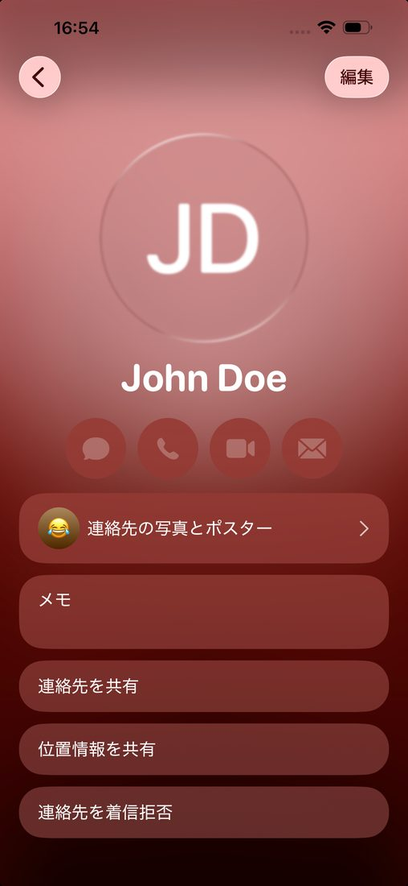
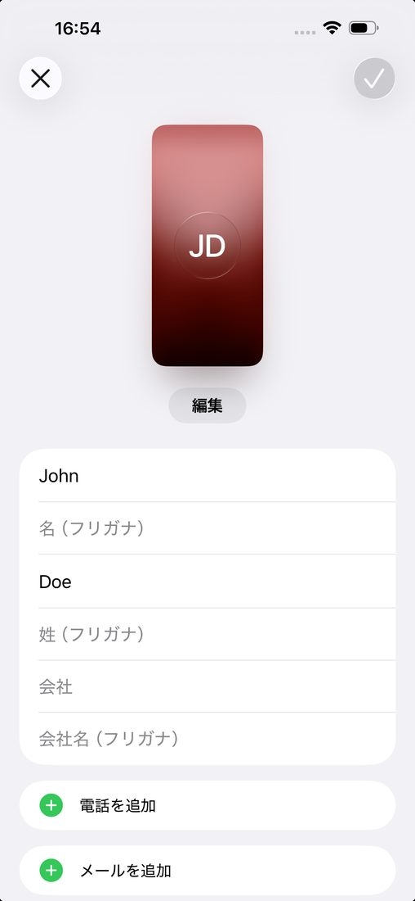
見た目は違っても、“モーダルという性質”は同じ。
07具体例②：別のモードに入り、親ビューをブロック（Pages）
権限要求モード → モーダルなダイアログ
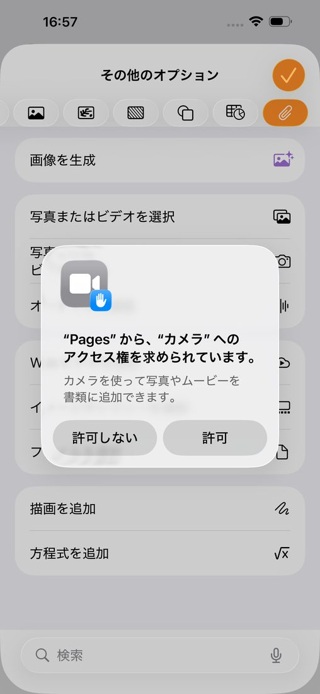
見た目は違っても、“モーダルという性質”は同じ。
08シートでも、モーダルとは限らない
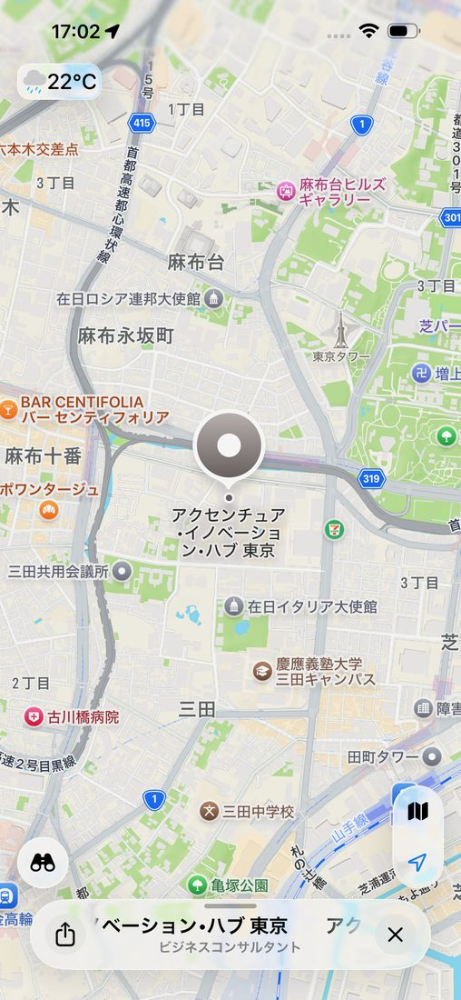
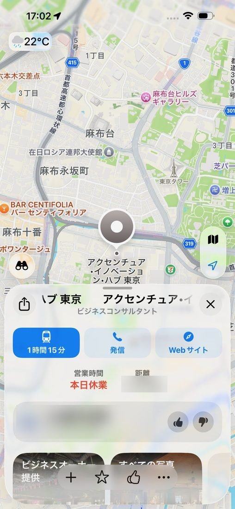
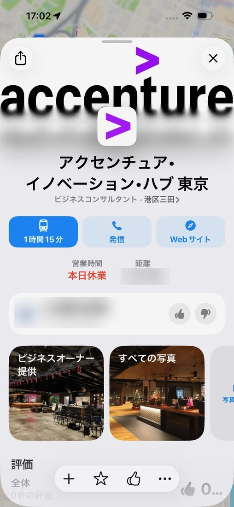
モーダルであるか否かは 1. モード遷移するか 2. 親ビューへの操作をブロックするか
09まとめ
形容詞として呼ぶ
「モーダルな◯◯」と修飾する
見た目でなく“役割”で決める
モード遷移＋操作ブロッキングがあるか
OS非依存の共通語
iOS / Android で同じ意味で使える
✕「あれモーダル？」
◯「あれはモーダルなシートね」
Appendix
Q&A・補足用ストック
A1モーダルはどこで使うべきか？
判断は見た目でなく“役割”。モーダルは「現在の文脈に紐づく自己完結タスク」に使い、独立した画面には使わない。
モーダルが適切
現在の文脈に紐づく自己完結タスク
iOS: sheet ／ Android: ModalBottomSheet
例：閲覧モード ⇄ 編集モード
HIG Sheets: “a scoped task that's closely related to their current context”
独立画面には使わない
地の画面と無関係な独立した画面
→ ドリルダウン（push ／ navigate()）
例：商品一覧から商品詳細へ進む
HIG Modality: “avoid … an app within your app / a hierarchy within a modal task”
Material も同じ：modal bottom sheet は “a set of choices ／ an alternative to inline menus and simple dialogs”＝補助UI。
出典：Apple HIG ― Sheets／Modality、WWDC22、Material ― Bottom sheets
A2メディア再生は modal？ ── 出し方次第
モーダルな全画面
親を凍結し ×/Done で閉じる
プレイヤー／ビューア
HIG Modality：全画面モーダルは “videos, photos, or camera views” に有効
非モーダルな全画面
コンテンツ自体が全画面
（親を持たず dismiss 不要）
HIG Going full screen：好例＝ゲーム・読書・メディア視聴
判定は“全画面かどうか”ではなく、親ビューをブロックし明示 dismiss するか。
出典：Apple HIG ― Modality／Going full screen（同 HIG が “nonmodal types of full-screen experiences” を明記）
A3OS非依存で呼ぶ：ナビゲーションの3分類（Material）
| 分類（Material） | 動き | iOS の例（API） | Android の例（API） |
|---|---|---|---|
| Lateral | 同じ階層の画面間を移動 | UITabBarController ／ TabView
UISegmentedControl | NavigationBar（BottomNavigationView）
TabLayout + ViewPager2 |
| Forward | 階層を下る・フローを前進 | pushViewController
NavigationStack（NavigationLink） | Navigation Component navigate()
FragmentTransaction |
| Reverse | 後退（戻る） | popViewController ／ dismiss
ナビゲーションの戻るボタン | システム Back ／ Up（navigateUp）
finish() |
Material の分類語（Lateral / Forward / Reverse）がそのまま OS 非依存の呼称。push などは iOS の実装語にすぎない。
A4一次情報（出典）
- Apple HIG — Modalitydeveloper.apple.com/design/human-interface-guidelines/modality
- Apple HIG — Going full screendeveloper.apple.com/design/human-interface-guidelines/going-full-screen
- Apple HIG — Sheetsdeveloper.apple.com/design/human-interface-guidelines/sheets
- WWDC22 — Explore navigation design for iOSdeveloper.apple.com/videos/play/wwdc2022/10001/
- Android — Principles of navigationdeveloper.android.com/guide/navigation/principles
- Material — Understanding navigationm2.material.io/design/navigation/understanding-navigation.html
- Material — Bottom sheetsm3.material.io/components/bottom-sheets/guidelines
- Material 3 — Transitionsm3.material.io/styles/motion/transitions
- Wikipedia — Mode (user interface)en.wikipedia.org/wiki/Mode_(user_interface)
A5モードの古典的な定義
古典的な定義：
同じ入力が、状態によって別の意味に解釈される状態。
例：キーの「A」は、通常モードでは文字入力。
コマンドモードでは“別の操作”として解釈される。
cf. Larry Tesler「NO MODES」── モードレスの追求（Tesler / Raskin）